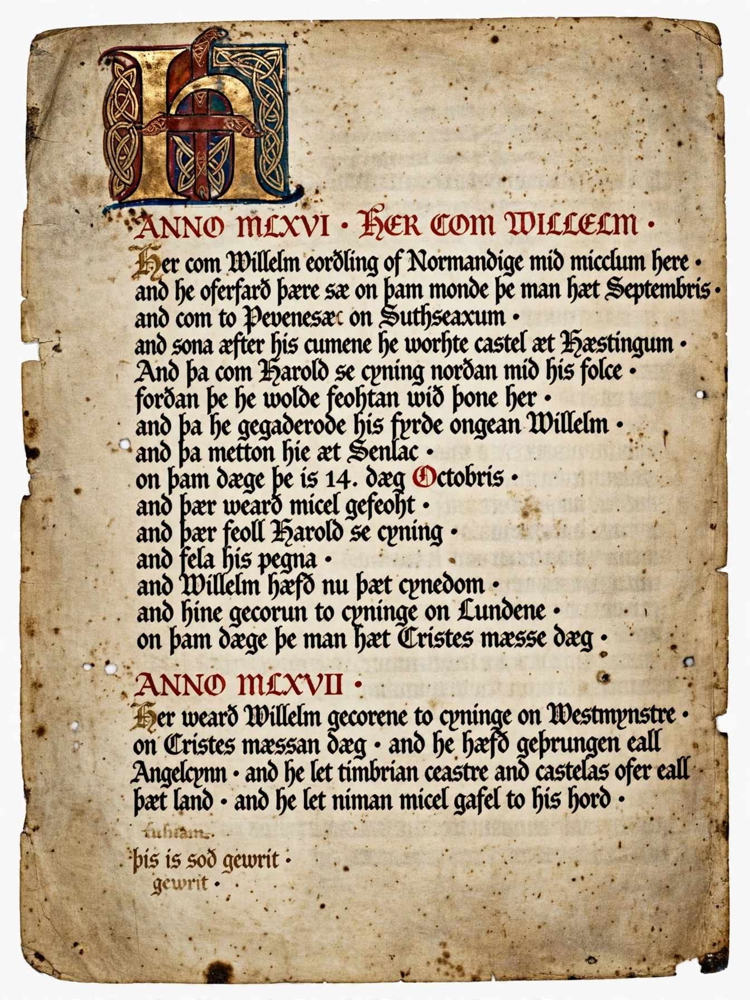

| Anglo-Saxon Chronicle | |
|---|---|
| Language | Old English |
| Begun | c. 890s, reign of Alfred the Great |
| Coverage | 60 BC – AD 1154 |
| Manuscripts | Nine surviving, in whole or part |
The Anglo-Saxon Chronicle is a collection of annals in Old English, chronicling the history of the Anglo-Saxons. The original chronicle was created in the late 9th century, probably in Wessex, during the reign of Alfred the Great. Copies were made and distributed to monasteries across England, where they were independently updated — in some cases being continued for more than two centuries, down to 1154.

The annals begin with Julius Caesar's invasions of Britain (entered under 60 BC) and continue year by year. Early entries were compiled from earlier sources, including Bede's Ecclesiastical History and regnal lists; from the later 9th century the Chronicle becomes a contemporary record and an independent source of the first importance for the Viking wars, the reign of Alfred, and the formation of the English kingdom.
Nine manuscripts survive in whole or in part. The best known are the Parker Chronicle (Corpus Christi College, Cambridge), the oldest, and the Peterborough Chronicle, whose final continuation, written after 1154, is a key witness to the transition from Old English to Middle English. Comparison of the manuscripts shows both a common origin and extensive independent continuation, making textual reconstruction complex.
For long stretches the Chronicle is the only connected narrative source for English history; it records battles, successions, famines, comets and eclipses, and preserves verse inserts such as the poem on the Battle of Brunanburh (937). Its annals for the reign of Stephen, written at Peterborough, contain a famous lament on the anarchy of the 1130s–40s: "I know not how to tell all the suffering and all the torments that they inflicted on wretched men in this land."
Alfred the Great · Bede · Peterborough Chronicle · Old English literature